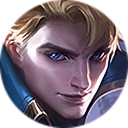

阿鲁卡 Alucard
战士 · 打野
背景故事
恶魔猎人 末日大战对莫尼亚人而言是一段辉煌的记忆。强大的光之秩序与帝国边防军联手，清剿了莫尼亚与荒芜之地关隘处的恶魔据点，将群魔驱赶回弃绝望境的腹地。但对年轻的阿鲁卡而言，这场战争只余下痛苦与悲惨的可怕回忆。其父麾下的第二军团因一次鲁莽的孤军突进而损失惨重。阿鲁卡的父亲在战斗中失踪，后被光之秩序宣告阵亡。 因其抗命之举，第二军团并未因牺牲而受褒奖，反被贴上‘抗命’的标签，饱受军纪散漫的指责。这对向来视父亲为英雄与楷模的阿鲁卡而言，是沉重的打击。所到之处尽是羞辱与讥讽，复仇的火焰在他胸中燃起，他立誓要为父名洗刷、肃清黎明大陆上的一切恶魔。于是，他离开故乡，远赴古老而神秘的光明修道院。作为阵亡将士的遗孤，阿鲁卡很快被光明修道院收留。 此后数年，阿鲁卡在光明修道院修习各类战斗技艺。凭天赋与不屈的意志，他很快成为同辈中最具潜质的弟子。受训期间，曾与其父并肩作战于第二军团的光之秩序指挥官泰格，常来修道院探望阿鲁卡，传授他各式高阶战斗技巧，并向他讲述父亲的英勇事迹。 彼时泰格已名动帝国，阿鲁卡对他甚为敬重，视若兄长。然而，每当提及父亲最后一战，泰格总是陷入沉默，眼中泛起复杂的情绪。阿鲁卡对那个想……[truncated]